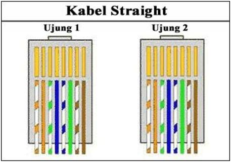
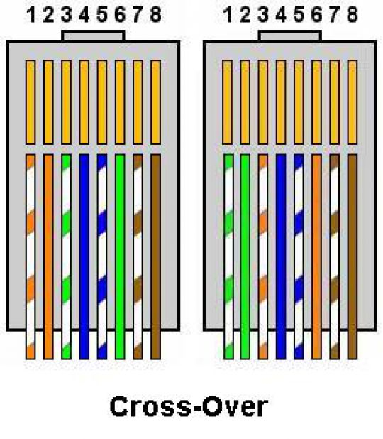

PENGERTIAN DARI KABEL STRAIGHT DAN CROSS BESERTA FUNGSI DARI WARNA PADA KABEL LANR
Assalamualaikum wr.wb. Hallo kawan-kawan sekalian apa kabar, Semoga kawan-kawan sekalian selalu sehat dan dalam lindungan Allah Swt amiinn ya robbal alamin. Oke, balik lagi di Website WINP GROUP bersama saya Adly Ansari NasutioN. Kali ini saya akan men – share sedikit Materi Tentang PENGERTIAN DARI KABEL STRAIGHT DAN CROSS BESERTA FUNGSI DARI WARNA PADA KABEL LAN. Nah Dari pada kawan-kawan menunggu terlalu lama, langsung saja simak penjelasan dibawah ini ya kawan-kawan.
1.Kabel Straight
 Kaberl Straight Merupakan Jenis Kabel Yang Memiliki Cara Pemasangan Yang Sama Antara Satu Dengan Ujung Lainnya. Fungsi Kabel Straight Ini Biasanya Digunakan Untuk Pemasangan Device Yang Berbeda.
Kabel CrossOver Merupakan Kabel Yang Memiliki Susunan Berbeda Antara Ujung Satu Dengan Ujung Dua. Kabel CrossOver digunakan Untuk Menghubungkan 2 Device Yang Sama.
Nah mungkin itulah Sedikit materi tentang PENGERTIAN DARI KABEL STRAIGHT DAN CROSS BESERTA FUNGSI DARI WARNA PADA KABEL LAN , kurang lebih nya saya mohon maaf. Jika kawan-kawan ingin berikan pendapat atau komentar , silahkan tulis komentar serta pendapat kawan-kawan dikolom komentar dibawah ini.
Saya ucapkan terima kasih dan saya ahkiri Assalamualaikum.Wr.wb.
Info lebih lanjut->
Hubungi Saya
2.Kabel CrossOver

Nah Berikut Adalah Fungsi Dari Warna Pada Kabel Lan, Simak Ya Kawan -kawan Sekalian.